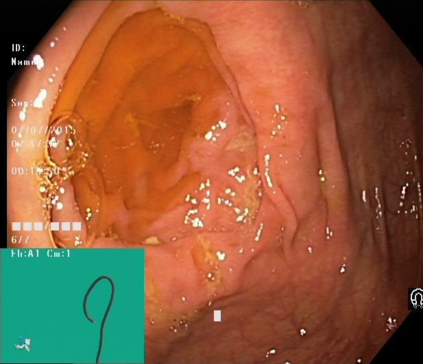
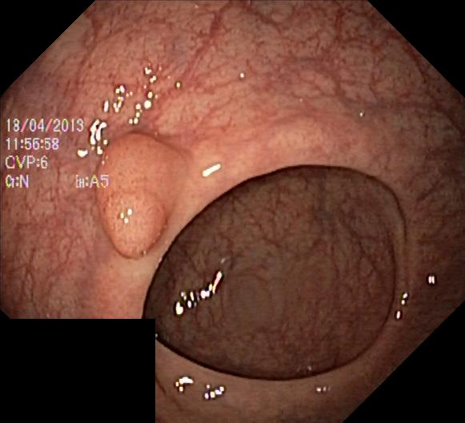
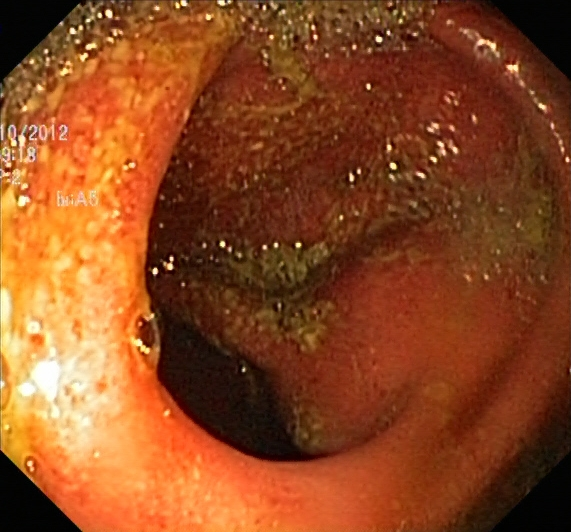
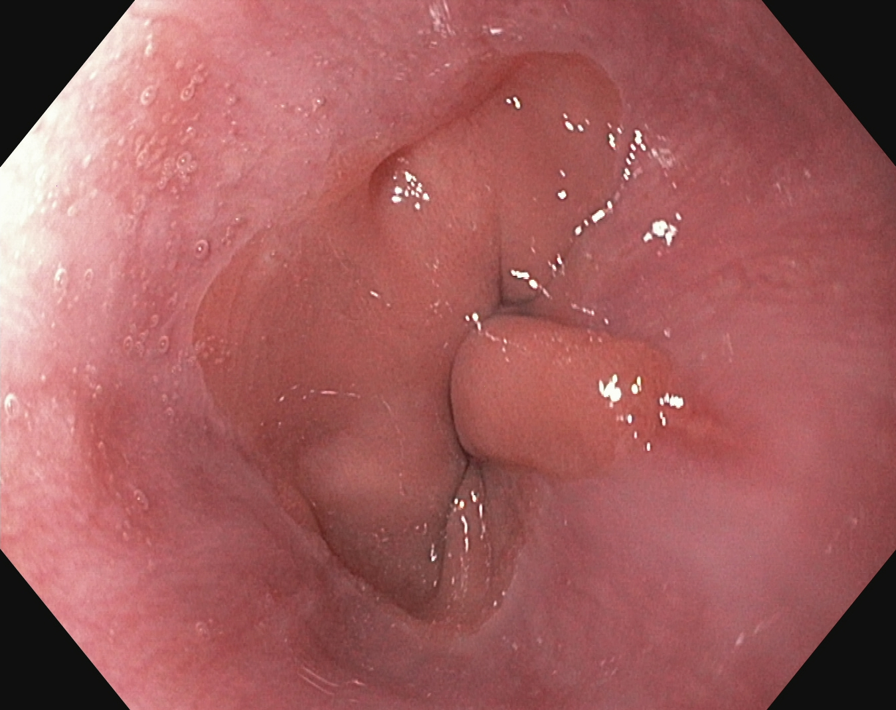
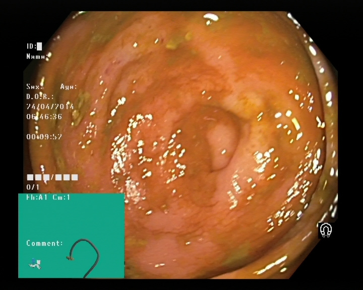
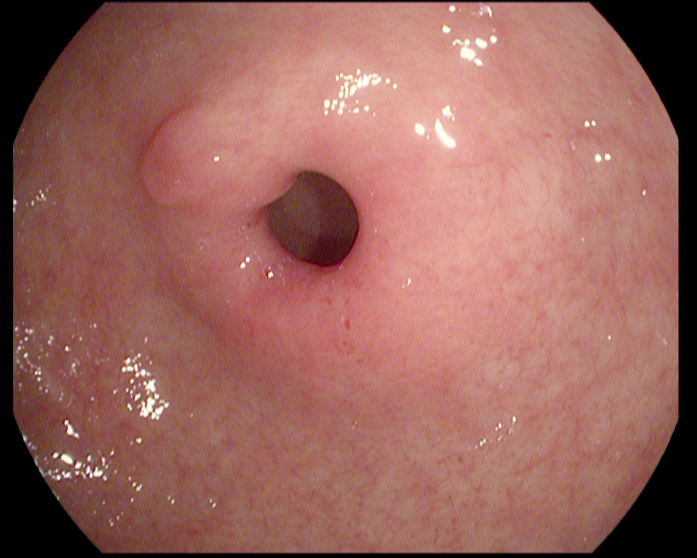
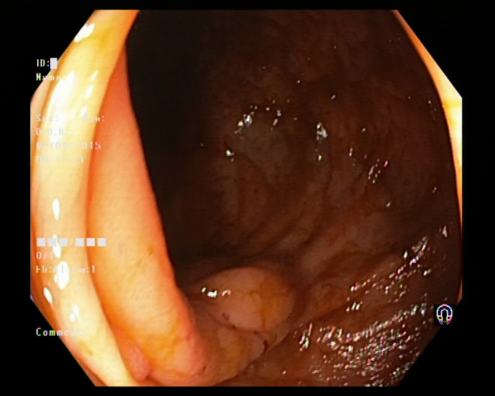
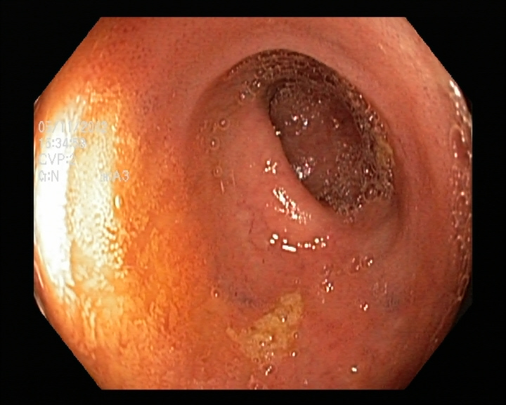

Contexte. La classification automatique d’images endoscopiques digestives exige des architectures capables de discriminer repères anatomiques, lésions pathologiques, procédures teintées et indicateurs de qualité procédurale, dans des conditions d’éclairage et de coloration très variables.
Objectif. Comparer systématiquement trois familles d’architectures — ResNet-50 (baseline mono-flux RGB), SE-ResNet-50 (recalibrage canal par blocs Squeeze-and-Excitation) et dual-stream couleur-texture (fusion ResNet-50 RGB + branche HSV/LBP) — sur la taxonomie complète HyperKvasir (23 classes), en régimes from scratch et fine-tune ImageNet.
Méthodes. Protocole benchmark B0–B6 documenté : B0/B1 sur Kvasir v1 (4 classes, résultats réels) ; B2–B6 sur HyperKvasir (splits stratifiés 70/15/15, seed 42). Métrique principale : macro-F1. Sélection des checkpoints par validation macro-F1 maximale.
Résultats. Sur Kvasir v1, le baseline B0 atteint 70,3 % d’exactitude et 0,689 macro-F1 (test) ; B1 (Optuna) atteint 76,0 % et 0,749 macro-F1. Sur HyperKvasir (23 classes), les campagnes B2–B6 donnent (test) : B2 87,9 % / F1 0.585, B3 72,5 % / F1 0.439, B4 88,2 % / F1 0.577, B5 75,5 % / F1 0.448, B6 88,8 % / F1 0.586.
Conclusions. Sur HyperKvasir, le SE-ResNet-50 ImageNet (B4) atteint 88,2 % d’exactitude et 0,577 macro-F1 (test), légèrement sous le ResNet-50 ImageNet (B2 : 0,585) et le dual-stream ImageNet (B6 : 0,586). En scratch, le SE-ResNet (B3, F1 0,439) reste nettement inférieur au transfer learning. Sur Kvasir v1, le rappel polype (~48 %) reste insuffisant cliniquement. Cette revue v1.1 intègre l’intégralité du plan et les résultats HyperKvasir B2–B6.
Mots-clés : endoscopie digestive, HyperKvasir, ResNet, SE-ResNet, dual-stream, couleur-texture, LBP, classification multi-classes, macro-F1, apprentissage par transfert, aide au diagnostic.
Le cancer colorectal demeure une cause majeure de morbidité et de mortalité. L’efficacité de la coloscopie repose sur l’inspection complète de la muqueuse, la confirmation de l’intubation cæcale, le taux de détection des adénomes (ADR) et la documentation des repères anatomiques. Les systèmes d’aide à la détection (CAD) analysent les images en temps réel ou différé pour repérer polypes, inflammations, œsophagites, scores de préparation (BBPS) et repères procéduraux.
Les jeux publics Kvasir et HyperKvasir ont permis de standardiser l’évaluation des réseaux convolutifs sur l’imagerie digestive. HyperKvasir étend Kvasir à 23 classes couvrant l’ensemble du tractus gastro-intestinal, avec un déséquilibre de classes reflétant la prévalence clinique réelle.
Le dépôt endoscopy-resnet expose actuellement un ResNet-50 from scratch mono-flux RGB sur 4 classes Kvasir v1. Les résultats réels (juin 2026) montrent une exactitude test de 76 % (B1) mais un rappel polype de 48 %, insuffisant pour un déploiement clinique. Les limites identifiées sont :
| ID | Question |
|---|---|
| RQ1 | Un ResNet-50 from scratch peut-il établir une baseline fiable sur un protocole standardisé (Kvasir v1, 4 classes) ? |
| RQ2 | L’optimisation Optuna (B1) améliore-t-elle la macro-F1 par rapport aux hyperparamètres par défaut (B0) ? |
| RQ3 | Le SE-ResNet-50 (recalibrage canal) surpasse-t-il le ResNet-50 sur HyperKvasir (23 classes), en scratch (B3) et ImageNet (B4) ? |
| RQ4 | Le dual-stream couleur-texture (RGB + HSV/LBP) améliore-t-il la macro-F1 par rapport aux architectures mono-flux (B5/B6 vs B2/B3) ? |
| RQ5 | Le fine-tune ImageNet améliore-t-il systématiquement les performances par rapport au scratch pour chaque architecture (B2 vs B0, B4 vs B3, B6 vs B5) ? |
| RQ6 | Les résultats internes sont-ils comparables à l’état de l’art publié sous protocole équivalent (splits, classes, pré-entraînement, métrique) ? |
Le tableau suivant synthétise les travaux de référence et notre baseline interne. Les comparaisons directes sont limitées par des protocoles hétérogènes (splits, classes regroupées, métriques).
Tableau 1 — Synthèse comparative de l’état de l’art en classification endoscopique.
| Référence | Approche | Jeu / classes | Résultat rapporté | Pertinence |
|---|---|---|---|---|
| Hu et al. 2018 (SE-Net) | SE-ResNet, recalibrage canal | ImageNet | +0,9 pp top-1 vs ResNet | Base théorique des blocs SE |
| SE-ResNet + Kvasir v2 (IIETA 2024) | SE-ResNet + optimisation | Kvasir v2, 8 classes | ~99,7 % accuracy | Même domaine GI ; protocole différent (feature selection) |
| Borgli et al. 2020 (HyperKvasir) | Benchmark dataset | 23 classes, 10 662 images | Référence taxonomique | Jeu cible de cette étude |
| Effimix / EfficientNet fusion (MDPI 2022) | Dual CNN + fusion features | HyperKvasir multi-classes | ~98 % accuracy | Concurrent dual-stream à citer |
| Hybrid LBP+GLCM+RGB (Sensors 2022) | CNN + descripteurs texture/couleur | Maladies GI | ~99 % (FFNN) | Justifie branche texture explicite |
| FRAN dual-branch (2024) | Attention résiduelle + fusion contours | Kvasir / HyperKvasir | 97 %+ | Fusion sémantique + détail spatial |
| Baseline interne (juin 2026) | ResNet-50 scratch + Optuna | Kvasir v1, 4 classes | B0 test 70,3 % acc, 0,689 F1 B1 test 76,0 % acc, 0,749 F1 |
Point de départ interne documenté |
Les 23 classes officielles Simula sont organisées par groupe clinique. Exclusion explicite : pas de sous-types histologiques de polypes (hyperplasique vs adénomateux) — non présents dans les labels HyperKvasir.
normal-cecum — cæcum normal (repère de fin de coloscopie)normal-pylorus — pylore normalnormal-z-line — ligne Z œsogastriqueileum — iléon (endoscopie poussée)retroflex-rectum — rétroflexion rectaleretroflex-stomach — rétroflexion gastriquepolyp — polype non teintdyed-lifted-polyps — polype soulevé par injection + teinturedyed-resection-margins — marges de résection teintéesoesophagitis-a — œsophagite grade A (Los Angeles)oesophagitis-b-d — œsophagite grades B–Dbarretts — œsophage de Barrettshort-segment-barretts — Barrett court segmentulcerative-colitis-0-1 — colite ulcéreuse score 0–1 (Mayo endoscopique)ulcerative-colitis-1-2 — colite ulcéreuse score 1–2ulcerative-colitis-2-3 — colite ulcéreuse score 2–3ulcerative-colitis-grade-1 — colite ulcéreuse grade 1ulcerative-colitis-grade-2 — colite ulcéreuse grade 2ulcerative-colitis-grade-3 — colite ulcéreuse grade 3hemorrhoids — hémorroïdesimpacted-stool — fécalome / résidu fécalbbps-0-1 — score BBPS 0–1 (préparation insuffisante)bbps-2-3 — score BBPS 2–3 (préparation adéquate)En complément des 23 classes fines, un macro-rappel groupé sera calculé : repères anatomiques / pathologies / procédures teintées / scores qualité — pour l’analyse clinique agrégée dans benchmarks/ml/results/summary.md.
Figure 2 — Échantillons HyperKvasir par groupe clinique.




Architecture de référence : ResNet-50 avec blocs Bottleneck (expansion 4), ~23,5 M paramètres, entrée RGB 224×224, sortie softmax à N classes.
Extension du ResNet-50 par blocs Squeeze-and-Excitation (Hu et al., 2018). Chaque SEBottleneck intègre un SEBlock après la convolution 1×1 finale : GlobalAvgPool → FC(C/16) → ReLU → FC(C) → Sigmoid → recalibrage canal-wise.
Figure 3 — Schéma du bloc Squeeze-and-Excitation (SEBlock).
Hypothèse : le recalibrage canal améliore la robustesse aux variations de couleur (sang, bile, sur/sous-exposition) typiques de l’endoscopie.
Architecture à deux flux fusionnés par concaténation de features :
Figure 4 — Schéma dual-stream ResNet + couleur-texture (B5/B6).
Kvasir v1 (4 classes) — B0/B1
scripts/download_and_prepare_kvasir.py.HyperKvasir (23 classes) — B2–B6
hyper-kvasir-labeled-images.zip (~3,9 Go) via scripts/download_and_prepare_hyperkvasir.py.data/hyperkvasir/{train,val,test}/{classe}/.class_counts.json, benchmark_meta.txt.Entraînement RGB : recadrage aléatoire, retournements horizontal/vertical, ColorJitter (luminosité, contraste, saturation), normalisation ImageNet (mean/std).
Branche texture (dual-stream) : conversion RGB → HSV, extraction LBP (rayon 1–2, P=8, normalisé), empilement H + LBP + S. Option de précalcul --precompute-texture pour accélérer l’entraînement.
| Métrique | Rôle |
|---|---|
| Macro-F1 | Objectif principal — sélection checkpoint et reporting |
| F1 pondéré | Synthèse tenant compte des fréquences de classes |
| Exactitude (accuracy) | Comparaison avec travaux publiés |
| Rappel par classe | Sensibilité clinique (polype, œsophagite, grades colite) |
| Matrice de confusion | 4×4 (Kvasir) ou 23×23 (HyperKvasir) |
| Macro-rappel groupé | Repères / pathologies / procédures teintées / qualité |
Tableau 2 — Matrice expérimentale complète.
| ID | Architecture | Prétrain | Jeu | Description |
|---|---|---|---|---|
| B0 | ResNet-50 | none | Kvasir v1 | Baseline scratch — hyperparamètres par défaut |
| B1 | ResNet-50 + Optuna | none | Kvasir v1 | HPO baseline — 8 essais, réentraînement 15 époques |
| B2 | ResNet-50 | ImageNet | HyperKvasir | Fine-tune transfer learning |
| B3 | SE-ResNet-50 | none | HyperKvasir | Recalibrage canal — scratch |
| B4 | SE-ResNet-50 | ImageNet | HyperKvasir | SE + transfer learning |
| B5 | Dual-stream couleur-texture | none | HyperKvasir | RGB + HSV/LBP fusion concat |
| B6 | Dual-stream couleur-texture | ImageNet (RGB) | HyperKvasir | Branche RGB pré-entraînée |
Hyperparamètres par défaut : scratch — 15–20 époques, AdamW, lr=10−3, batch 16 ; fine-tune — lr=10−4. Sélection par macro-F1 validation maximale. Matériel : Apple MPS (AMD Radeon Pro 5300M), repli CPU si instable.
Campagne exécutée le 13 juin 2026 sur images endoscopiques réelles Simula.
Tableau 3 — Performance B0 vs B1 sur Kvasir v1 (résultats réels).
| Modèle | Partition | Exactitude | Macro-F1 | F1 pondéré | Rappel polype | Rappel ulcère |
|---|---|---|---|---|---|---|
| B0 Baseline | val | 0,737 | 0,724 | 0,724 | 0,493 | 0,587 |
| B0 Baseline | test | 0,703 | 0,689 | 0,689 | 0,413 | 0,587 |
| B1 Optuna | val | 0,793 | 0,789 | 0,789 | 0,587 | 0,760 |
| B1 Optuna | test | 0,760 | 0,749 | 0,749 | 0,480 | 0,720 |
B1 améliore la macro-F1 test de +0,060 par rapport à B0. Rappels test B1 : pylore 96 %, cæcum 88 %, ulcère 72 %, polype 48 %. Confusions principales : polype↔ulcère (20 polyps classés ulcère sur 75).
Tableau 4 — Matrice de confusion B0 baseline (test). Lignes = vérité, colonnes = prédiction.
| cæcum | polype | pylore | ulcère | |
|---|---|---|---|---|
| cæcum | 64 | 10 | 0 | 1 |
| polype | 9 | 31 | 13 | 22 |
| pylore | 0 | 0 | 72 | 3 |
| ulcère | 11 | 13 | 7 | 44 |
Tableau 5 — Matrice de confusion B1 Optuna (test).
| cæcum | polype | pylore | ulcère | |
|---|---|---|---|---|
| cæcum | 66 | 8 | 0 | 1 |
| polype | 12 | 36 | 7 | 20 |
| pylore | 0 | 0 | 72 | 3 |
| ulcère | 12 | 4 | 5 | 54 |
Figure 5 — Échantillons Kvasir v1 (partition test) et prédictions B1.




Tableau 6 — Résultats HyperKvasir B2–B6 (test/val).
| ID | Architecture | Prétrain | Partition | Exactitude | Macro-F1 | F1 pondéré |
|---|---|---|---|---|---|---|
| B2 | ResNet-50 | ImageNet | val | 89,6 % | 0.591 | 0.890 |
| B2 | ResNet-50 | ImageNet | test | 87,9 % | 0.585 | 0.874 |
| B3 | SE-ResNet-50 | none | val | 73,0 % | 0.439 | 0.705 |
| B3 | SE-ResNet-50 | none | test | 72,5 % | 0.439 | 0.700 |
| B4 | SE-ResNet-50 | ImageNet | val | 88,9 % | 0.596 | 0.878 |
| B4 | SE-ResNet-50 | ImageNet | test | 88,2 % | 0.577 | 0.870 |
| B5 | Dual-stream | none | val | 78,2 % | 0.472 | 0.755 |
| B5 | Dual-stream | none | test | 75,5 % | 0.448 | 0.726 |
| B6 | Dual-stream | ImageNet (RGB) | val | 90,1 % | 0.596 | 0.894 |
| B6 | Dual-stream | ImageNet (RGB) | test | 88,8 % | 0.586 | 0.881 |
Tableau 6bis — Synthèse test (macro-F1) par famille d’architecture.
| Famille | Run | Prétrain | Exactitude test | Macro-F1 test |
|---|---|---|---|---|
| ResNet-50 | B2 | ImageNet | 87,9 % | 0,585 |
| SE-ResNet-50 | B3 | none | 72,5 % | 0,439 |
| SE-ResNet-50 | B4 | ImageNet | 88,2 % | 0,577 |
| Dual-stream | B5 | none | 75,5 % | 0,448 |
| Dual-stream | B6 | ImageNet (RGB) | 88,8 % | 0,586 |
Figure 6 — Macro-F1 test HyperKvasir (23 classes) par run B2–B6.
Tableau 7 — Comparaison littérature avec évaluation du protocole équivalent.
| Référence | Métrique | Score publié | Notre résultat | Protocole équivalent ? |
|---|---|---|---|---|
| SE-ResNet Kvasir v2 (IIETA 2024) | Accuracy | ~99,7 % | B4 88,2 % acc / 0,577 F1 | Non (8 vs 23 classes, feature selection) |
| Effimix HyperKvasir (MDPI 2022) | Accuracy | ~98 % | B6 88,8 % acc | Partiel (dual-stream, splits non documentés) |
| Hybrid LBP+GLCM (Sensors 2022) | Accuracy | ~99 % | B5 75,5 % acc | Partiel (texture explicite, jeu différent) |
| FRAN dual-branch (2024) | Accuracy | 97 %+ | B6 88,8 % acc | Non (attention + edge, protocole propre) |
| HyperKvasir benchmark (Borgli 2020) | Macro-F1 | ~0,82 (DenseNet-161) | B2 0,585 / B4 0,577 | Partiel (23 classes, split image-level) |
| Baseline interne | Macro-F1 test | — | B0 0,689 / B1 0,749 | Oui (Kvasir v1, protocole documenté) |
Les images endoscopiques présentent des variations importantes de luminosité, de teinte (sang rouge, bile jaune-verte, muqueuse rose) et de saturation. Les blocs SE recalibrent les canaux de feature maps selon le contexte global de l’image. Résultats RQ3 : B4 (SE-ResNet ImageNet) atteint 0,577 macro-F1 test vs 0,585 pour B2 (ResNet ImageNet) — pas de gain mesurable du recalibrage SE dans notre protocole. B3 scratch (0,439) confirme l’importance du transfer learning. Le SE-ResNet reste pertinent pour l’analyse des confusions par classe (œsophagites, grades colite), mais n’améliore pas la métrique globale sous 15 époques sans HPO dédié.
Sur Kvasir v1, la confusion polype↔ulcère (20 erreurs B1 sur 75 polyps test) suggère que la couleur RGB seule est insuffisante pour discriminer les lésions muqueuses. La branche HSV/LBP capture explicitement les motifs texturels (LBP) et les composantes couleur (H, S) indépendamment de l’intensité globale. Cette approche s’aligne sur les travaux hybrides LBP/GLCM (Sensors 2022) et les architectures dual-stream Effimix/FRAN.
L’entraînement sur Apple MPS (AMD Radeon Pro 5300M) a montré une instabilité lors des campagnes Optuna longues (essais élagués à macro-F1 ≈ 0,25, checkpoints corrompus). Mitigation : réentraînement explicite post-HPO, repli --device cpu pour les campagnes HyperKvasir. Estimation compute : ~30–45 min/modèle/15 époques → ~6–8 h pour B2–B6.
HyperKvasir présente un fort déséquilibre (ex. polyp >> impacted-stool). L’usage de la macro-F1 comme métrique principale atténue le biais vers les classes majoritaires, mais le rappel des classes rares reste critique cliniquement. Extensions prévues : perte pondérée ou focal loss (phase ultérieure), macro-rappel groupé par catégorie clinique.
| Phase | Intitulé | Livrables | Statut |
|---|---|---|---|
| 0 | Documentation | Revue HTML (ce document), SCIENTIFIC_REVIEW.md, PDF v1.1 | Terminé |
| 1 | Infrastructure | Registre modèles (--arch), script HyperKvasir 23 classes, dataloader dual-stream | Terminé |
| 2 | Modèles | SE-ResNet-50 (B3/B4), dual-stream couleur-texture (B5/B6), fine-tune ImageNet (B2) | Terminé |
| 3 | Benchmarks | Entraînement + évaluation B2–B6, export JSON, comparaison littérature | Terminé |
| 4 | Mise à jour documentation | Injection résultats HyperKvasir dans HTML, summary.md, régénération PDF v1.1 | Terminé |
| 5 | Extensions cliniques | Splits patient-level, focal loss, HPO Optuna par architecture, Grad-CAM | Planifié |
Tableau 8 — Matrice des risques identifiés.
| Risque | Mitigation |
|---|---|
| Instabilité MPS (Optuna/HPO long) | Entraînement --device cpu en fallback ; validation checkpoints via evaluate.py avant rapport |
| Déséquilibre 23 classes | Weighted CE ou focal loss (phase 5) ; macro-F1 comme métrique principale |
| Dual-stream lent (LBP online) | Précalcul cartes texture (--precompute-texture) ; TextureColorNet léger |
| Comparaisons littérature biaisées | Tableau « protocole équivalent ? » (§6.3) avec splits, classes, pretrain, métrique |
| Pas de split patient HyperKvasir | Documenter comme limitation ; extension patient-level en phase 5 |
| Priorité | Direction |
|---|---|
| Élevée | HPO Optuna dédié SE-ResNet (B4) et focal loss pour classes rares |
| Élevée | Grad-CAM / visualisation des poids SE sur confusions chromatiques |
| Élevée | Splits train/val/test au niveau patient |
| Élevée | Perte focalisée / pondérée pour classes rares et rappel polype |
| Moyenne | HPO Optuna par architecture (8 essais max) ; repli CPU si MPS instable |
| Moyenne | Grad-CAM, visualisation des cartes d’attention SE et branches texture |
Environnement : Python 3.11, PyTorch ≥2.11, torchvision ≥0.26, Optuna ≥4, scikit-learn ≥1.5, scikit-image ≥0.24 (gestion via Pixi).
Préparation des données
pixi run prepare-kvasir -- --output data/kvasir pixi run prepare-hyperkvasir -- --output data/hyperkvasir
Entraînement Kvasir v1 (B0/B1)
pixi run train -- --data-dir data/kvasir --epochs 15 --output checkpoints/kvasir_baseline.pt pixi run tune -- --data-dir data/kvasir --n-trials 8 --epochs-per-trial 8 pixi run train -- --data-dir data/kvasir --epochs 15 --output checkpoints/kvasir_optuna.pt \ --lr 3.997e-4 --weight-decay 3.94e-5 --batch-size 16 --label-smoothing 0.095
Campagne HyperKvasir (B2–B6)
bash scripts/run_hyperkvasir_benchmarks.sh # ou individuellement : pixi run train -- --data-dir data/hyperkvasir --arch resnet50 --pretrained --epochs 15 \ --output checkpoints/hyperkvasir/b2_resnet50_imagenet.pt pixi run train -- --data-dir data/hyperkvasir --arch seresnet50 --epochs 15 \ --output checkpoints/hyperkvasir/b3_seresnet50_scratch.pt pixi run train -- --data-dir data/hyperkvasir --arch dualstream_resnet_color_texture --epochs 15 \ --output checkpoints/hyperkvasir/b5_dualstream_scratch.pt
Évaluation
pixi run evaluate -- --checkpoint checkpoints/kvasir_baseline.pt --data-dir data/kvasir --split test pixi run evaluate -- --checkpoint checkpoints/hyperkvasir/b2_resnet50_imagenet.pt \ --data-dir data/hyperkvasir --split test \ --output benchmarks/ml/results/hyperkvasir_b2_test.json
Artefacts principaux : models/, script_ResNet.py, training.py, evaluate.py, benchmarks/ml/protocol.md, benchmarks/ml/results/summary.md.
[1] Hu J., Shen L., Sun G. (2018). Squeeze-and-Excitation Networks. CVPR.
[2] He K. et al. (2016). Deep residual learning for image recognition. CVPR.
[3] Tajbakhsh N. et al. (2016). Automated polyp detection in colonoscopy videos. IEEE TMI, 35(2), 630–644.
[4] Pogorelov K. et al. (2017). Kvasir: A multi-class image dataset for GI disease detection. ACM MMSys.
[5] Borgli H. et al. (2020). HyperKvasir, a comprehensive multi-class image and video dataset for gastrointestinal endoscopy. Scientific Data, 7, 283.
[6] Sokolova M., Lapalme G. (2009). A systematic analysis of performance measures for classification tasks. IP&M, 45(4), 427–437.
[7] SE-ResNet for Kvasir v2 (2024). IIETA — classification endoscopique multi-classes.
[8] Effimix / EfficientNet fusion for HyperKvasir (2022). MDPI.
[9] Hybrid LBP+GLCM+RGB for GI disease classification (2022). Sensors.
[10] FRAN dual-branch attention fusion (2024). Classification Kvasir / HyperKvasir.
[11] Akiba T. et al. (2019). Optuna: A hyperparameter optimization framework. KDD.
[12] Roberts M. et al. (2017). Common pitfalls in machine learning for medical imaging. Nature Protocols.
[13] Byrne M. F. et al. (2019). Real-time automatic measurement of adenoma detection rate. Gastroenterology.
barrettsbbps-0-1bbps-2-3dyed-lifted-polypsdyed-resection-marginshemorrhoidsileumimpacted-stoolnormal-cecumnormal-pylorusnormal-z-lineoesophagitis-aoesophagitis-b-dpolypretroflex-rectumretroflex-stomachshort-segment-barrettsulcerative-colitis-0-1ulcerative-colitis-1-2ulcerative-colitis-2-3ulcerative-colitis-grade-1ulcerative-colitis-grade-2ulcerative-colitis-grade-3| Hyperparamètre | Valeur optimale |
|---|---|
| Taux d’apprentissage | 3,997 × 10−4 |
| Weight decay | 3,94 × 10−5 |
| Taille de batch | 16 |
| Optimiseur | AdamW |
| Planificateur | aucun |
| Lissage d’étiquettes | 0,095 |
| Taille d’image | 224 px |
Espace de recherche Optuna : lr (log [10−5, 10−2−6, 10−2
Échantillons Kvasir v1 réels : Annexe C — Essais Optuna (phase HPO, Kvasir v1)
Essai Macro-F1 Optimiseur Planificateur Taille Statut 0 0,585 SGD cosine 224 complet 1 0,724 AdamW none 224 meilleur 2 0,250 AdamW step 256 complet 3–7 ≤0,250 mixte mixte mixte élagué Annexe D — Échantillons visuels
docs/assets/pdf_samples/ (cecum.jpg, pylorus.jpg, polyp.jpg, ulcer.jpg). Échantillons HyperKvasir par groupe clinique : à ajouter post-téléchargement (repère, polype, colite, œsophagite).